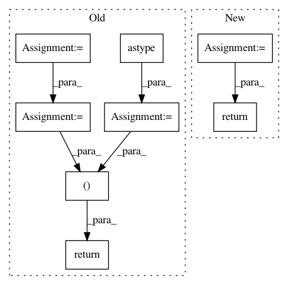

978ecfda84d59435dd93be6aa3ceee313e997f6c,mmcv/video/optflow.py,,quantize_flow,#Any#Any#Any#,86
Before Change
dx = dx / w // avoid inplace operations
dy = dy / h
dx = np.maximum(0, np.minimum(dx + max_val, 2 * max_val))
dy = np.maximum(0, np.minimum(dy + max_val, 2 * max_val))
dx = np.round(dx * 255 / (max_val * 2)).astype(np.uint8)
dy = np.round(dy * 255 / (max_val * 2)).astype(np.uint8)
return dx, dy
def dequantize_flow(dx, dy, max_val=0.02, denorm=True):
Recover from quantized flow.
After Change
dx = dx / w // avoid inplace operations
dy = dy / h
// use 255 levels instead of 256 to make sure 0 is 0 after dequantization.
flow_comps = [
quantize(d, -max_val, max_val, 255, np.uint8) for d in [dx, dy]
]
return tuple(flow_comps)
def dequantize_flow(dx, dy, max_val=0.02, denorm=True):
Recover from quantized flow.
In pattern: SUPERPATTERN
Frequency: 3
Non-data size: 8
Instances
Project Name: open-mmlab/mmcv
Commit Name: 978ecfda84d59435dd93be6aa3ceee313e997f6c
Time: 2018-08-27
Author: chenkaidev@gmail.com
File Name: mmcv/video/optflow.py
Class Name:
Method Name: quantize_flow
Project Name: SpiNNakerManchester/sPyNNaker
Commit Name: 3782cc530a2914543e4f86fc727a9021defc0342
Time: 2017-10-30
Author: christian.brenninkmeijer@manchester.ac.uk
File Name: spynnaker/pyNN/models/neuron/synapse_types/synapse_type_exponential.py
Class Name:
Method Name: get_exponential_decay_and_init
Project Name: rusty1s/pytorch_geometric
Commit Name: 37847c77889e39143034af9fe0d4b92bc74e992a
Time: 2018-03-02
Author: matthias.fey@tu-dortmund.de
File Name: torch_geometric/datasets/utils/ply.py
Class Name:
Method Name: read_ply